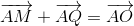

Exerciții și probleme rezolvate de tip Bac pentru profilul pedagogic
- Această problemă a fost dată în sesiunea august - septembrie a anului 2012, pentru profilul pedagogic, la Subiectul I, exercițiul 5.
Bacalaureat Matematică 2012 | Pedagogic | Sesiunea august - septembrie | Subiectul I
Se consideră paralelogramul  și
și  mijloacele laturilor
mijloacele laturilor  respectiv
respectiv  . Demonstrați că
. Demonstrați că  .
.
Fie  centrul paralelogramului. Atunci, din regula paralelogramului de adunare a doi vectori, ne rezultă că:
centrul paralelogramului. Atunci, din regula paralelogramului de adunare a doi vectori, ne rezultă că:
 și  .
.
Dar  (vectori opuși)
(vectori opuși)

- Această problemă a fost dată în modelul de subiect al anului 2013, pentru profilul pedagogic, la Subiectul I, exercițiul 5.
Bacalaureat Matematică 2013 | Pedagogic | Model de subiect | Subiectul I
Se consideră pătratul  de centru
de centru  . Arătați că
. Arătați că  .
.

Dar

- Această problemă a fost dată în sesiunea iunie - iulie a anului 2013, pentru profilul pedagogic, la Subiectul I, exercițiul 5.
Bacalaureat Matematică 2013 | Pedagogic | Sesiunea iunie - iulie | Subiectul I
În reperul cartezian  se consideră punctele
se consideră punctele  și
și  . Determinați coordonatele mijlocului segmentului
. Determinați coordonatele mijlocului segmentului  .
.
Fie  mijlocul segmentului , unde:
mijlocul segmentului , unde:


Coordonatele mijlocului segmentului sunt  și
și  .
.
- Această problemă a fost dată în sesiunea august - septembrie a anului 2014, pentru profilul pedagogic, la Subiectul I, exercițiul 5.
Bacalaureat Matematică 2014 | Pedagogic | Sesiunea august - septembrie | Subiectul I
În reperul cartezian  se consideră punctele
se consideră punctele  ,
,  și
și  . Arătați că triunghiul
. Arătați că triunghiul  este isoscel.
este isoscel.


 .
.
Rezultă că  este isoscel.
este isoscel.
- Această problemă a fost dată în sesiunea iunie - iulie a anului 2014, pentru profilul pedagogic, la Subiectul I, exercițiul 5.
Bacalaureat Matematică 2014 | Pedagogic | Sesiunea iunie - iulie | Subiectul I
În reperul cartezian  se consideră punctele
se consideră punctele  și
și  . Determinați coordonatele mijlocului segmentului
. Determinați coordonatele mijlocului segmentului  .
.
Notăm  .
.


Rezultă că mijlocul segmentului este  .
.
- Această problemă a fost dată în sesiunea august - septembrie a anului 2015, pentru profilul pedagogic, la Subiectul I, exercițiul 5.
Bacalaureat Matematică 2015 | Pedagogic | Sesiunea august - septembrie | Subiectul I
În reperul cartezian  se consideră punctele
se consideră punctele  și
și  Determinați distanța de la punctul
Determinați distanța de la punctul  la punctul
la punctul  știind că
știind că  este mijlocul segmentului
este mijlocul segmentului 
Aflăm mai întâi coordonatele punctului despre care știm că este mijlocul segmentului
Atunci, avem că:


Distanța de la punctul la punctul o aflăm astfel:


Dacă îți dorești să vezi și să rezolvi în plus și alte probleme de tip Bac în care apar elemente de geometrie, te sfătuim să accesezi unul dintre eBook-urile următoare, Subiectul I, problema 5:
Bacalaureat Matematică 2012 | Pedagogic | Model de subiect | Subiectul I
Bacalaureat Matematică 2012 | Pedagogic | Sesiunea iunie - iulie | Subiectul I
Bacalaureat Matematică 2013 | Pedagogic | Sesiunea august - septembrie | Subiectul I
Bacalaureat Matematică 2014 | Pedagogic | Model de subiect | Subiectul I
Bacalaureat Matematică 2015 | Pedagogic | Sesiunea iunie - iulie | Subiectul I
Bacalaureat Matematică 2016 | Pedagogic | Model de subiect | Subiectul I